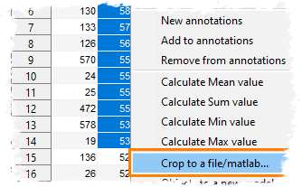

Did you know...
- Highlight in the objects that have to be exported
- Press the right mouse button to call a popup menu
- Select the Crop to a file/matlab entry
|  |
The objects detected and quantified using the Get statistics... tool can be cropped out from the dataset and saved into separate files:
|